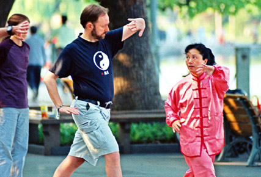
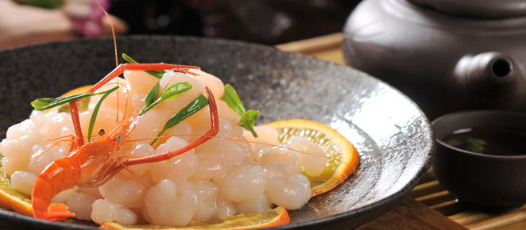
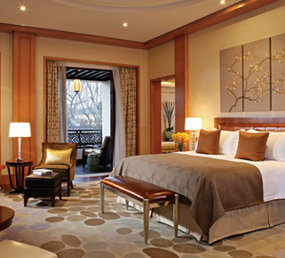
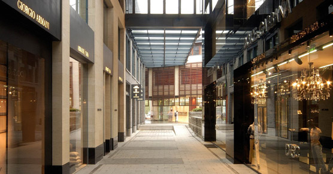

杭州享“人间天堂”美誉，西湖
朦胧烟雨、龙井茶香
将温婉的江南展现在你面前
首页
>体验杭州

经典景区
每个人的江南词典里都有个叫杭州的地方，在杭州的游记里每个人都会贴上西湖、西溪、运河的标签，此番探春之旅，你会错过这些地儿吗？如果说西湖、西溪、运河集结了杭州风光之大美，那么那些隐匿在城市里且带着些市民气的地带则交织出了日常生活之温馨美，如果时间充裕，不妨走到这些小众的地儿去感...
西湖风景区
西溪国家湿地公园
京杭大运河杭
千岛湖
苏堤春晓
曲院风荷
断桥残雪
花港观鱼
柳浪闻莺
三潭印月
双峰插云
南屏晚钟
雷峰夕照
平湖秋月

美食
杭菜自南宋时期便成为中国十大菜系之一，是浙菜的主体，众多美味佳肴都伴随着传说故事流传至今。有楼外楼、知味观、外婆家、张生记、皇饭儿王润兴、花中城大酒店、山外山菜馆等餐饮名店
楼外楼
张生记酒店(杭州总店)
知味观仁和店
乾隆舫
更多>

住宿
门是舒适温馨的憩所，出门则可饱览无限风景。杭州有奢华高贵的高星级住处，有散布在乡野间的农家小院，有实惠方便...
酒店数据
西溪喜来登酒店
客户评价
住宿地址
更多>
娱乐
华灯初现，杭城的妩媚风情，从西湖的月影中，运河的微波里，一次又一次被打捞而起。月色点燃了夜里的繁华，尽情地体验城市流光溢彩的夜间情调。组个团宅在杭州名小...
西湖之夜
印象西湖
宋城千古情
青藤茶馆
更多>

购物
如果你问杭州的购物哪里好？那我会告诉你，杭州的购物很有特色，著名的不是那些灯光璀璨，一层层不同格局的百货商场和大型购物中心，而是一条条风格独特的特色商业街。
边福帽(河坊街)
胡庆余堂
李宝赢堂
西湖龙井茶
更多>